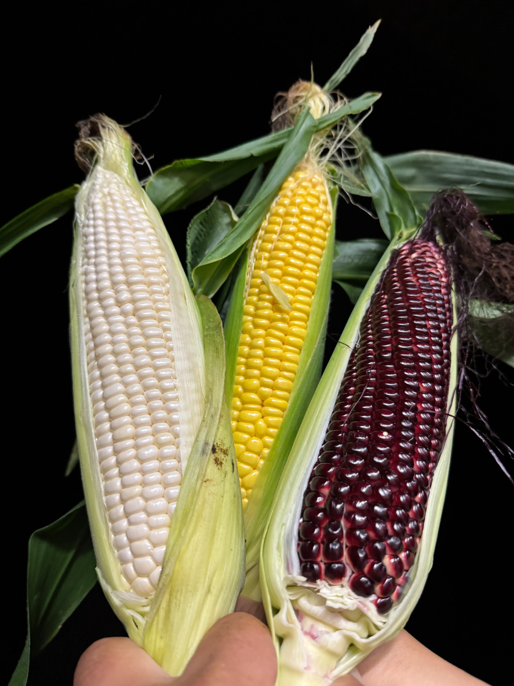

Pick Up Event
治部坂会場・平谷会場共通イベント


選手優勝パレード
熱戦を終えた選手たちが登場！
会場みんなで、勝利の瞬間をお祝いしよう。
コースを駆け抜けた選手たちが、笑顔で会場をパレード。
近くで手を振ったり、声援を送ったり、
レースの余韻を一緒に楽しもう！
選手を間近で見られるチャンス！
大会を盛り上げた選手たちが、会場を華やかに巡ります。
応援していた選手に会えるかもしれない、
特別なパレードタイムをお楽しみください。
選手を間近で見られるチャンス！
大会を盛り上げた選手たちが、会場を華やかに巡ります。
開催スケジュール
①11:30〜 ②13:30〜 ③15:00〜（各回30分）
スペシャルイベント時間
10:30〜11:30（プロメカニック解説ショー）
対象: 小学生以下のお子様（保護者同伴）
参加方法: 各回30分前〜受付ブースにて受付開始


キッチンカー
おいしいグルメが会場に集合！
食べ歩きしながら、イベントを満喫しよう。
できたてのフードやスイーツ、ドリンクまで、
会場をもっと楽しくしてくれるメニューがいっぱい。
家族や友達とお気に入りの一品を見つけよう！
-

-

イベント気分を盛り上げるグルメ！
小腹が空いた時にも、ゆっくり休憩したい時にもぴったり。
キッチンカーならではの味を楽しみながら、
一日中会場を満喫できます。
イベント気分を盛り上げるグルメ！
小腹が空いた時にも、ゆっくり休憩したい時にもぴったり。
開催スケジュール
①11:30〜 ②13:30〜 ③15:00〜（各回30分）
スペシャルイベント時間
10:30〜11:30（プロメカニック解説ショー）
対象: 小学生以下のお子様（保護者同伴）
参加方法: 各回30分前〜受付ブースにて受付開始
治部坂会場

TOYOTAプレゼンツ クラフトカーワークショップ
自分だけのクルマを作ろう！
色をぬって、組み立てて、走らせてみよう。
好きな色や模様をつけて、オリジナルカーを制作。
作る楽しさと走らせるワクワクを、
親子で一緒に体験できます。

小さなお子様も楽しく参加！
スタッフが作り方をサポートするので、
初めての工作でも安心して楽しめます。
完成したクラフトカーは思い出としてお持ち帰りいただけます。
ダンス披露会
元気いっぱいのステージに注目！
音楽に合わせて、会場を笑顔で盛り上げます。
子どもたちや出演チームによる、楽しいダンスパフォーマンス。
リズムに乗って手拍子をしたり、
一緒に盛り上がれるステージイベントです。
会場みんなで楽しめるステージ！
迫力ある動きやかわいい振り付けなど、
見どころたっぷりのダンスを披露します。
応援しながら、楽しい時間をお過ごしください。
木育体験
木にふれて、香りを感じて。
自然のぬくもりを親子で楽しむ体験です。
木のおもちゃや素材にふれながら、
遊びの中で自然やものづくりの楽しさを感じられます。
小さなお子様にもおすすめの体験コーナーです。
木のぬくもりを感じよう！
やさしい手ざわりや香りを楽しみながら、
木と親しむ時間を過ごせます。
親子でゆったり参加できる体験イベントです。
耳ツボ体験
耳から気軽にリフレッシュ！
イベントの合間に、からだを整える体験を。
耳にあるツボをやさしく刺激して、
気分転換やリラックスを楽しめる体験コーナー。
短い時間で気軽に参加できます。
大人にうれしい癒し体験！
専門スタッフが耳ツボのポイントを案内します。
イベントを楽しみながら、
ほっとひと息つける時間をお過ごしください。
苔テラリウム
小さなびんの中に森を作ろう！
苔の世界を楽しむ、癒しのクラフト体験。
ガラス容器の中に苔や飾りを入れて、
自分だけの小さな自然を作ります。
眺めて楽しい、持ち帰れるワークショップです。
親子で楽しめるものづくり！
配置を考えたり、飾りを選んだりしながら、
世界にひとつのテラリウムを制作。
完成した作品はおうちでも楽しめます。
交通安全教室イベント
楽しく学んで、安全意識をアップ！
交通ルールを親子で確認してみよう。
横断歩道の渡り方や道路で気をつけることなど、
毎日の生活に役立つ交通ルールを、
わかりやすく楽しく学べます。
遊びながら交通安全を学ぼう！
お子様にも伝わりやすい内容で、
安全に過ごすためのポイントを紹介します。
親子で一緒に学べるイベントです。
平谷会場

TOYOTAプレゼンツ GRグッズ販売
GRファン必見のアイテムが登場！
会場限定のお買い物を楽しもう。
ロゴ入りグッズや応援アイテムなど、
イベント気分をさらに高める商品を販売します。
お気に入りの一品をぜひ見つけてください。
思い出に残るGRグッズをチェック！
観戦のおともにも、おみやげにもぴったりなアイテムを用意。
会場でしか出会えないグッズを探しながら、
ショッピングもお楽しみください。